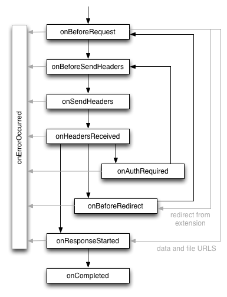

Use the chrome.webRequest module to intercept, block,
or modify requests in-flight and to observe and analyze traffic.
You must declare the "webRequest" permission in the extension manifest to use the web request API, along with host permissions for any hosts whose network requests you want to access. If you want to use the web request API in a blocking fashion, you need to request the "webRequestBlocking" permission in addition. For example:
{
"name": "My extension",
...
"permissions": [
"webRequest",
"*://*.google.com"
],
...
}
Node: If you request the "webRequestBlocking" permission, web requests
are delayed until the background page of your extension has been loaded. This
allows you to register event listeners before any web requests are processed.
In order to avoid deadlocks, you must not start synchronous XmlHttpRequests or
include scripts from the internet via <script src="..."> tags
in your background page.
The web request API defines a set of events that follow the life cycle of a web request. You can use these events to observe and analyze traffic. Certain synchronous events will allow you to intercept, block, or modify a request.
The event life cycle for successful requests is illustrated here, followed by
event definitions:

onBeforeRequest (optionally synchronous)onBeforeSendHeaders (optionally synchronous)onBeforeSendHeaders event is passed to all subscribers, so
different subscribers may attempt to modify the request; see the Implementation details section for how this is
handled. This event can be used to cancel the request.onSendHeadersonHeadersReceived (optionally synchronous)onAuthRequired (optionally synchronous)onBeforeRedirectonResponseStartedonCompletedonErrorOccurredonCompleted or onErrorOccurred is fired as the final
event with one exception: If a request is redirected to a data://
URL, onBeforeRedirect is the last reported event.
(*) Note that the web request API presents an abstraction of the network stack to the extension. Internally, one URL request can be split into several HTTP requests (for example to fetch individual byte ranges from a large file) or can be handled by the network stack without communicating with the network. For this reason, the API does not provide the final HTTP headers that are sent to the network. For example, all headers that are related to caching are invisible to the extension.
The following headers are currently not provided to the
onBeforeSendHeaders event. This list is not guaranteed to be
complete nor stable.
As the following sections explain, events in the web request API use request IDs, and you can optionally specify filters and extra information when you register event listeners.
Each request is identified by a request ID. This ID is unique within a browser session and the context of an extension. It remains constant during the the life cycle of a request and can be used to match events for the same request. Note that several HTTP requests are mapped to one web request in case of HTTP redirection or HTTP authentication.
To register an event listener for a web request, you use a variation on the
usual addListener() function.
In addition to specifying a callback function,
you have to specify a filter argument and you may specify an optional extra info
argument.
The three arguments to the web request API's addListener() have
the following definitions:
var callback = function(details) {...};
var filter = {...};
var opt_extraInfoSpec = [...];
Here's an example of listening for the onBeforeRequest
event:
chrome.webRequest.onBeforeRequest.addListener( callback, filter, opt_extraInfoSpec);
Each addListener() call takes a mandatory callback function as
the first parameter. This callback function is passed a dictionary containing
information about the current URL request. The information in this dictionary
depends on the specific event type as well as the content of
opt_extraInfoSpec.
If the optional opt_extraInfoSpec array contains the string
'blocking' (only allowed for specific events), the callback
function is handled synchronously. That means that the request is blocked until
the callback function returns. In this case, the callback can return a BlockingResponse that determines the further
life cycle of the request. Depending on the context, this response allows
cancelling or redirecting a request (onBeforeRequest), cancelling a
request or modifying headers (onBeforeSendHeaders,
onHeadersReceived), or providing authentication credentials
(onAuthRequired).
The RequestFilter
filter allows limiting the requests for which events are
triggered in various dimensions:
*://www.google.com/foo*bar.main_frame (a document that is loaded
for a top-level frame), sub_frame (a document that is loaded for
an embedded frame), and image (an image on a web site).
See RequestFilter.Depending on the event type, you can specify strings in
opt_extraInfoSpec to ask for additional information about the
request. This is used to provide detailed information on request's data only
if explicitly requested.
Several implementation details can be important to understand when developing an extension that uses the web request API:
In the current implementation of the web request API, a request is considered
as cancelled if at least one extension instructs to cancel the request. If
an extension cancels a request, all extensions are notified by an
onErrorOccurred event. Only one extension is allowed to redirect a
request or modify a header at a time. If more than one extension attempts to
modify the request, the most recently installed extension wins and all others
are ignored. An extension is not notified if its instruction to modify or
redirect has been ignored.
Chrome employs two caches — an on-disk cache and a very fast in-memory
cache. The lifetime of an in-memory cache is attached to the lifetime of a
render process, which roughly corresponds to a tab. Requests that are answered
from the in-memory cache are invisible to the web request API. If a request
handler changes its behavior (for example, the behavior according to which
requests are blocked), a simple page refresh might not respect this changed
behavior. To make sure the behavior change goes through, call
handlerBehaviorChanged() to flush the in-memory cache. But don't do
it often; flushing the cache is a very expensive operation. You don't need to
call handlerBehaviorChanged() after registering or unregistering an
event listener.
The timestamp property of web request events is only guaranteed to
be internally consistent. Comparing one event to another event will give
you the correct offset between them, but comparing them to the current time
inside the extension (via (new Date()).getTime(), for instance)
might give unexpected results.
The following example illustrates how to block all requests to
www.evil.com:
chrome.webRequest.onBeforeRequest.addListener(
function(details) {
return {cancel: details.url.indexOf("://www.evil.com/") != -1};
},
{urls: ["<all_urls>"]},
["blocking"]);
As this function uses a blocking event handler, it requires the "webRequest" as well as the "webRequestBlocking" permission in the manifest file.
The following example achieves the same goal in a more efficient way because
requests that are not targeted to www.evil.com do not need to be
passed to the extension:
chrome.webRequest.onBeforeRequest.addListener(
function(details) { return {cancel: true}; },
{urls: ["*://www.evil.com/*"]},
["blocking"]);
The following example illustrates how to delete the User-Agent header from all requests:
chrome.webRequest.onBeforeSendHeaders.addListener(
function(details) {
for (var i = 0; i < details.requestHeaders.length; ++i) {
if (details.requestHeaders[i].name === 'User-Agent') {
details.requestHeaders.splice(i, 1);
break;
}
}
return {requestHeaders: details.requestHeaders};
},
{urls: ["<all_urls>"]},
["blocking", "requestHeaders"]);
For more example code, see the web request samples.